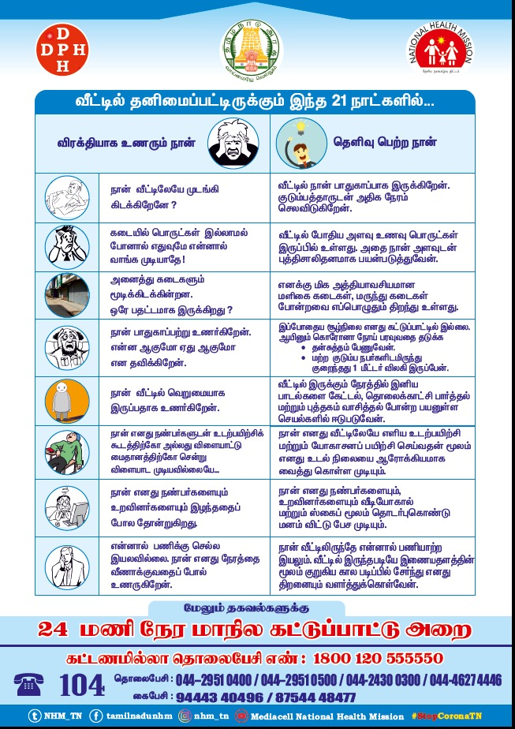

Tamil Nadu Mental Health Program
The Tamil Nadu Mental Health Program is a crucial initiative by the state government to address the growing need for mental health support and reduce the stigma associated with mental illness.
Objective
The primary objective of the Tamil Nadu Mental Health Program is to provide comprehensive mental health services to the population, including prevention, early intervention, treatment, and rehabilitation. It aims to:
- Increase awareness about mental health issues.
- Reduce stigma and discrimination surrounding mental illness.
- Provide accessible and affordable mental health services.
- Integrate mental health care into general healthcare services.
Benefits
- Free Counseling: The program offers free counseling services to individuals and families facing mental health challenges.
- Psychiatric Treatment: Access to psychiatric treatment, including medication and therapy, is provided through government hospitals and mental health facilities.
- Awareness Campaigns: The program conducts public awareness campaigns to educate people about mental health, reduce stigma, and encourage help-seeking behavior.
- Early Intervention: The focus is on early detection and intervention for mental health issues, preventing them from escalating into more severe conditions.
- Community-Based Care: The program promotes community-based mental health care, ensuring that services are accessible at the local level.
Other Details
Launched by: The Tamil Nadu Mental Health Program is an initiative of the Tamil Nadu government's Department of Health and Family Welfare. It is aligned with the National Mental Health Programme (NMHP) of the Government of India.
Operations:
- The program operates through a network of mental health facilities, including government hospitals, primary health centers, and dedicated mental health clinics.
- District Mental Health Programme (DMHP) is a key component, providing community-based mental health services at the district level.
- The program also involves training healthcare professionals in mental health care and integrating mental health into primary healthcare settings.
Focus Areas: The program addresses a wide range of mental health issues, including depression, anxiety, schizophrenia, substance abuse, and suicide prevention.
Significance
The Tamil Nadu Mental Health Program plays a vital role in improving the mental well-being of the population. By providing accessible and affordable mental health services, the program helps to:
- Reduce the burden of mental illness.
- Improve the quality of life for individuals with mental health conditions.
- Promote mental health awareness and reduce stigma.
- Support early intervention and prevention.
The program's success depends on continued efforts to strengthen the mental health infrastructure, increase awareness, and ensure that services reach those who need them most. It's a crucial step towards creating a more inclusive and supportive society for individuals with mental health challenges.
